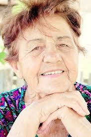

Nuestros Artistas
Carolina García
Es una ceramista que crea obras únicas con arcilla, explorando formas y texturas inspiradas en la naturaleza.
País: México
Edad: 26 años
Estilo: Cerámica contemporánea
Redes Sociales:

Adolfo Martínez
Es un pintor abstracto cuyas obras reflejan emociones y estados de ánimo.
País: Chile
Edad: 29 años
Estilo: Arte abstracto
Redes Sociales:

Ramón Riquelme
Es un orfebre reconocido por sus elegantes diseños y la maestría en el manejo de metales preciosos.
País: Perú
Edad: 30 años
Estilo: Joyería contemporánea
Redes Sociales:

María López
Es una tejedora que fusiona técnicas tradicionales con elementos modernos en sus creaciones textiles
País:Chile
Edad: 38 años
Estilo: Textil contemporáneo
Redes Sociales: